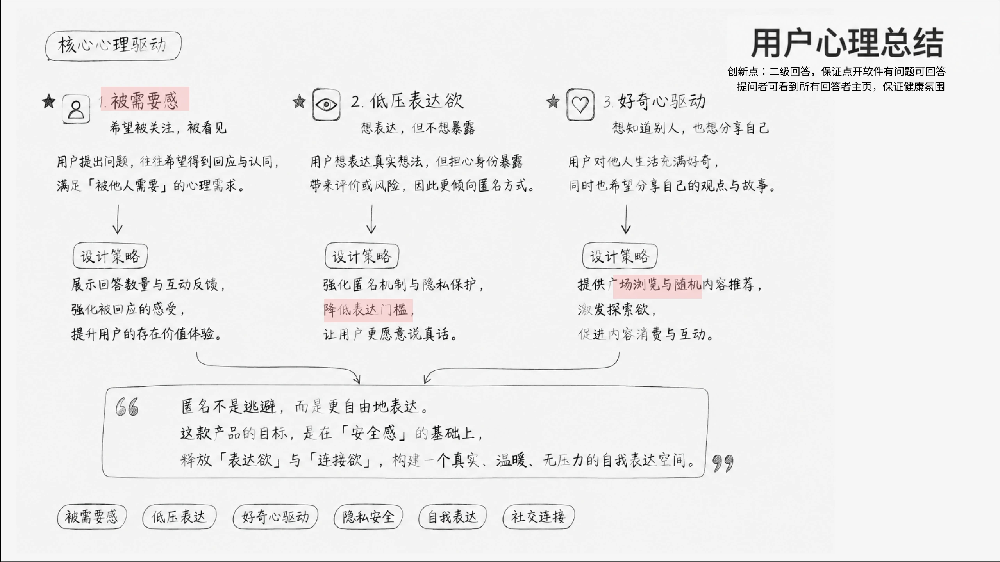
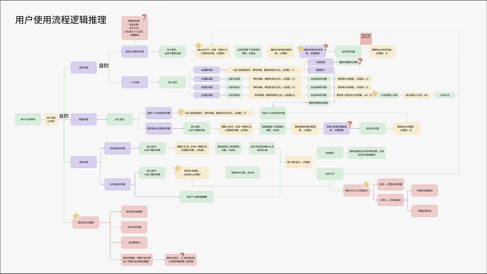
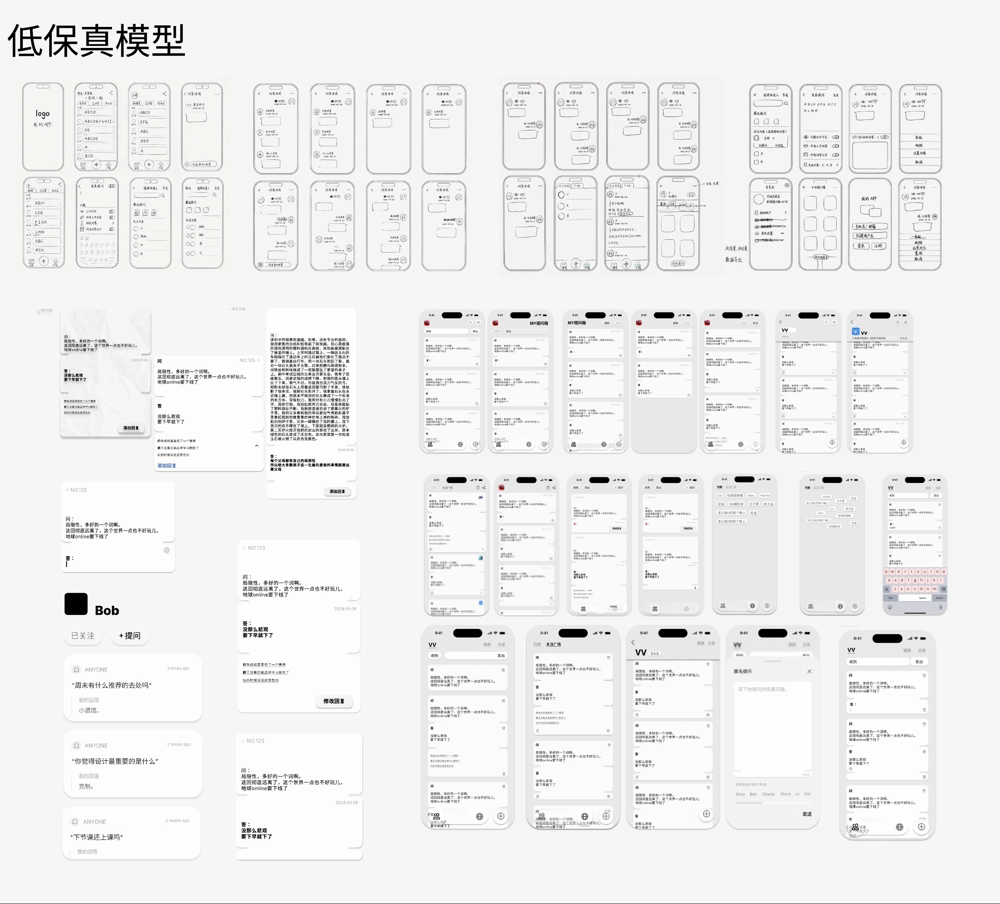
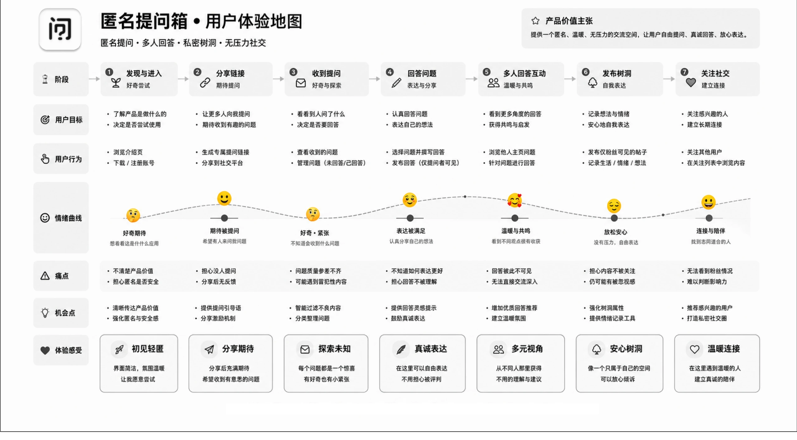

希望被看见
提出问题，也是在期待回应与认同。
设计对应：组织收到与发出的问答状态，让用户能够追踪回应。
围绕低压力表达与真诚回应，将用户动机、使用路径与内容边界，逐步转化为匿名问答的交互方案。
设计材料把用户动机归纳为三个方向：希望被回应、想表达但担心暴露身份，以及对他人与生活的好奇。它们构成产品设计的出发点。
提出问题，也是在期待回应与认同。
设计对应：组织收到与发出的问答状态，让用户能够追踪回应。
表达真实想法时，身份暴露与被评价可能构成顾虑。
设计对应：将匿名身份与内容可见范围分别定义，提供私密选择。
从他人的问题与回答中发现值得参与的话题。
设计对应：通过公开广场与多人回答组织浏览和参与。

材料说明：本页的心理动机与情绪曲线按设计阶段的分析和预期体验呈现，尚未附可追溯的访谈样本或量化验证，不作为已验证的用户结论。
原始推导从用户主动进入产品开始，分别展开浏览问题、回答问题、提出问题与主页表达等路径，并标出关键节点、疑问和后续去向。
从关注对象与公开问答进入，思考哪些内容值得继续阅读或参与。
组织输入、选择接收对象、发送与查看回应的路径，区分匿名与私密。
区分收到与发出，以及已回答、未回答的状态，衔接后续交流。

先用草图与低保真方案探索页面结构、入口和问答组织，再在高保真原型中细化导航、回答归属与多人参与时的卡片层级。


这些材料展示方案探索与版本演变；目前没有将某次界面修改表述为已证明的效率提升或体验改善。
体验地图覆盖发现与进入、分享链接、收到提问、回答问题、多人回答互动、发布树洞、关注社交七个阶段，同时记录用户目标、行为、预期情绪、痛点与机会。

地图提示“担心没人提问”。可继续检查邀请引导、空状态和收到新问题的反馈是否清楚。
地图提出回答灵感与表达鼓励的机会；后续需要确认提示是否有帮助，以及会不会造成额外负担。
地图提示对回答可见性和深入交流的顾虑。后续重点检查内容归属、可见范围与交流入口。
匿名决定提问者身份如何展示；私密决定谁能看见内容。当前演示中，私密问答不进入公开广场或他人主页，回答归属于回答者账号。需要进一步观察首次使用者能否正确预判。
围绕一个问题，区分当前账号的回答与他人的回答、回复。用角色和已答、未答状态说明卡片变化，后续检查用户是否能判断自己的内容与操作权限。
高保真阶段探索以“转、展、收、改”等短字表达操作。视觉上的一致性需要与首次识别成本一起考虑，可继续比较短字、完整文字及图标配文字。
原始材料同时出现“没有点赞”的产品构想与带“赞”的界面，以及“回答仅提问者可见”与公开参与的不同描述。这里保留它们作为设计过程；当前演示规则以 Demo 内的产品说明为准。
试着发出一个问题、找到收到的邀请，再观察同一问题下不同回答的组织方式。在线演示使用本地 Mock 数据，刷新后恢复初始状态。